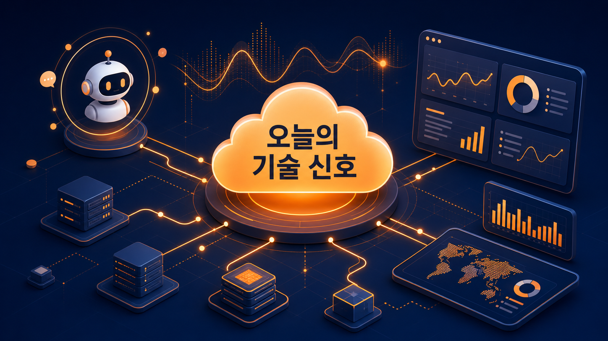
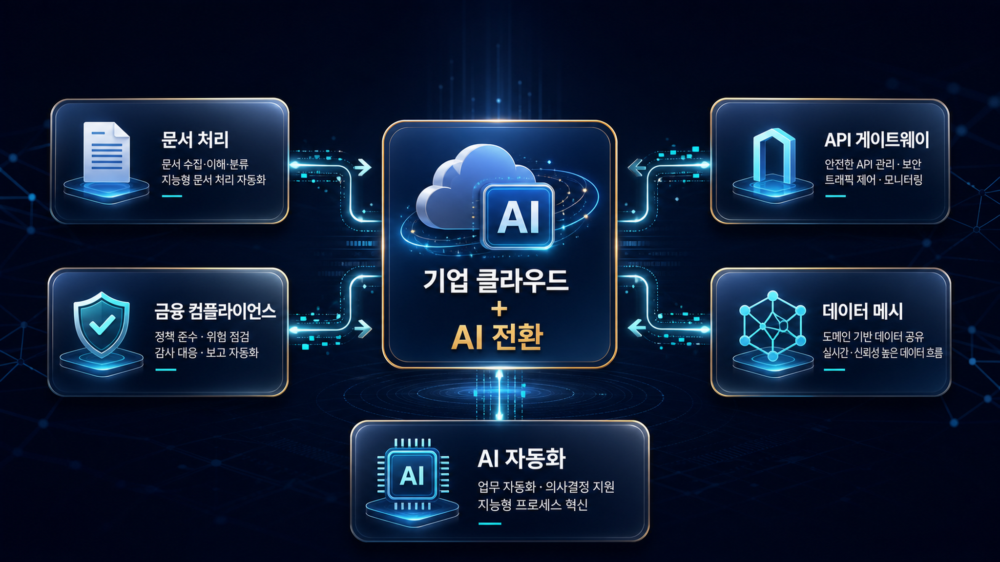
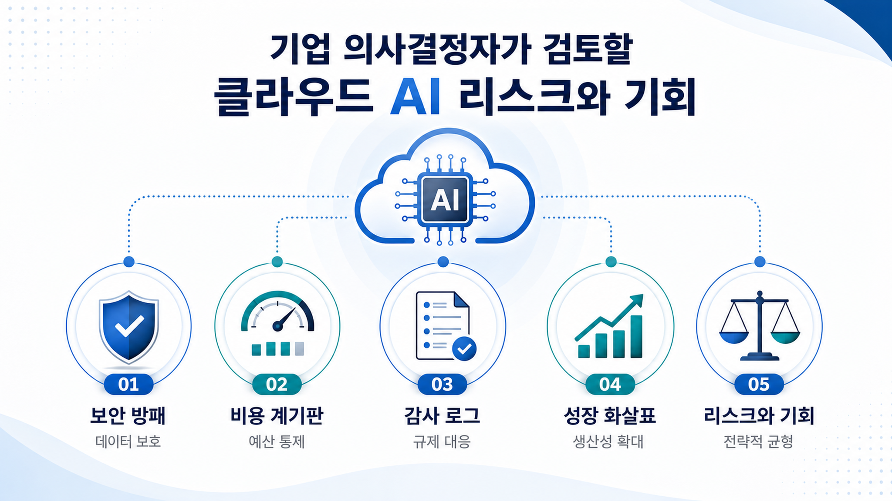

아마존웹서비스 개발운영 에이전트 성능 테스트 결과 분석
성능 테스트 결과 해석을 생성형 인공지능 에이전트로 보조하는 사례가 확인되었습니다. 기업은 테스트 데이터의 품질, 자동 분석 결과의 검증 기준, 반복 실행 비용을 함께 검토해야 합니다.
주요 기술: 개발운영 에이전트, 성능 테스트, 생성형 인공지능
원문 보기이 문서는 한국시간 2026년 06월 28일에 수집한 공식 블로그 피드와 저장된 원문 마크다운을 기준으로 작성했습니다. 확인되지 않은 판단은 확정하지 않고 확인 필요로 표시했습니다.

이번 실행에서는 개발운영 보조, 보안 검토, 지식 검색, 웹 검색, 객체 저장소 맥락화, 클라우드 정책 자동화 같은 신호가 관찰되었습니다. 수집 데이터만으로 서비스별 국내 가용성이나 실제 비용 효과를 단정하지 않았습니다.
성능 테스트 결과 해석을 생성형 인공지능 에이전트로 보조하는 사례가 확인되었습니다. 기업은 테스트 데이터의 품질, 자동 분석 결과의 검증 기준, 반복 실행 비용을 함께 검토해야 합니다.
주요 기술: 개발운영 에이전트, 성능 테스트, 생성형 인공지능
원문 보기뉴욕 서밋 발표를 통해 인프라, 인공지능, 데이터 서비스의 기능 확장이 함께 제시되었습니다. 발표 항목별 적용 가능 지역과 과금 조건은 별도 확인이 필요합니다.
주요 기술: 뉴욕 서밋, 클라우드 인프라, 생성형 인공지능
원문 보기아마존 베드록의 관리형 지식베이스는 기업 지식 검색과 생성형 인공지능 응답 품질을 빠르게 구성하려는 수요를 겨냥합니다. 데이터 원천 관리와 접근 권한 설계가 핵심입니다.
주요 기술: 아마존 베드록, 지식베이스, 검색증강생성
원문 보기에이전트가 최신 웹 정보를 활용하도록 하는 기능이 발표되었습니다. 최신성은 장점이지만 출처 신뢰도, 인용 추적, 외부 정보 사용 정책을 함께 점검해야 합니다.
주요 기술: 아마존 베드록 에이전트코어, 웹 검색, 지식 기반 응답
원문 보기기술 부채를 자동으로 식별하고 현대화 작업을 보조하는 기능이 제시되었습니다. 자동 제안은 코드 소유권, 변경 승인, 회귀 테스트 체계와 함께 검토되어야 합니다.
주요 기술: 아마존웹서비스 트랜스폼, 기술 부채, 애플리케이션 현대화
원문 보기릴리스 전 코드 변경 영향을 평가하는 개발운영 에이전트 기능이 제시되었습니다. 배포 승인 권한과 자동 판단의 책임 경계를 명확히 해야 합니다.
주요 기술: 개발운영 에이전트, 릴리스 관리, 코드 변경 평가
원문 보기보안 에이전트가 위협 모델링과 코드 보안 검토 영역으로 확장되는 흐름이 확인되었습니다. 보안팀은 자동 탐지 결과의 오탐·누락 검증 체계를 유지해야 합니다.
주요 기술: 보안 에이전트, 위협 모델링, 코드 보안 검토
원문 보기클라우드 정책 점검을 에이전트와 모델 컨텍스트 프로토콜로 자동화하는 아키텍처가 제시되었습니다. 정책 실행 권한과 감사 로그 보존이 주요 검토 지점입니다.
주요 기술: 아마존 관리형 워크플로, 베드록 에이전트코어, 모델 컨텍스트 프로토콜
원문 보기객체 저장소에 질의 가능한 맥락 정보를 직접 붙이는 기능이 발표되었습니다. 데이터 카탈로그, 검색, 거버넌스 체계와의 중복·연계를 검토할 필요가 있습니다.
주요 기술: 아마존 심플 스토리지 서비스, 객체 메타데이터, 데이터 맥락화
원문 보기
공식 블로그가 제시한 사례는 클라우드 기능 자체보다 업무 데이터, 사용자 권한, 모델 호출, 감사 가능성을 함께 검토해야 함을 보여줍니다.
기업은 신규 기능을 도입 후보로 분류한 뒤 기존 데이터 분류 체계, 접근 권한, 비용 모니터링, 장애 대응 기준과 맞물려 검토해야 합니다.
한국 기업은 개인정보 처리, 금융·공공 규제, 한국어 문서 품질, 리전 지원 여부를 별도로 확인해야 합니다. 해외 사례가 국내 조건과 동일하다고 가정하지 않는 것이 안전합니다.
인공지능 에이전트와 자동화 기능은 데이터 접근 범위, 실행 권한, 출력 검증, 감사 로그, 비용 상한이 함께 설계되어야 합니다. 원문에 명시되지 않은 보안 통제 수준은 확인 필요입니다.
이번 실행에서 확인된 항목은 기술 검토 후보로 분류하고, 원문별로 적용 가능 조건·제약·계정 설정·비용 영향을 확인하는 방식이 적합합니다. 단계형 로드맵은 작성하지 않았습니다.

| 관찰된 사실 | 근거 출처 | 기업 의사결정 시사점/리스크/기회 |
|---|---|---|
| 아마존웹서비스 개발운영 에이전트 성능 테스트 결과 분석 성능 테스트 결과 해석을 생성형 인공지능 에이전트로 보조하는 사례가 확인되었습니다. 기업은 테스트 데이터의 품질, 자동 분석 결과의 검증 기준, 반복 실행 비용을 함께 검토해야 합니다. | 근거 출처 원문 보기 | 관찰된 발표는 기업의 자동화·검색·보안 검토 범위를 넓히는 기회입니다. 다만 실제 적용 전에는 리전 지원, 권한 범위, 비용 상한, 감사 로그, 변경 승인 체계를 원문과 서비스 문서 기준으로 확인해야 합니다. |
| 뉴욕 서밋 주요 발표 정리 뉴욕 서밋 발표를 통해 인프라, 인공지능, 데이터 서비스의 기능 확장이 함께 제시되었습니다. 발표 항목별 적용 가능 지역과 과금 조건은 별도 확인이 필요합니다. | 근거 출처 원문 보기 | 관찰된 발표는 기업의 자동화·검색·보안 검토 범위를 넓히는 기회입니다. 다만 실제 적용 전에는 리전 지원, 권한 범위, 비용 상한, 감사 로그, 변경 승인 체계를 원문과 서비스 문서 기준으로 확인해야 합니다. |
| 아마존 베드록 관리형 지식베이스 발표 아마존 베드록의 관리형 지식베이스는 기업 지식 검색과 생성형 인공지능 응답 품질을 빠르게 구성하려는 수요를 겨냥합니다. 데이터 원천 관리와 접근 권한 설계가 핵심입니다. | 근거 출처 원문 보기 | 관찰된 발표는 기업의 자동화·검색·보안 검토 범위를 넓히는 기회입니다. 다만 실제 적용 전에는 리전 지원, 권한 범위, 비용 상한, 감사 로그, 변경 승인 체계를 원문과 서비스 문서 기준으로 확인해야 합니다. |
| 아마존 베드록 에이전트코어 웹 검색 기능 발표 에이전트가 최신 웹 정보를 활용하도록 하는 기능이 발표되었습니다. 최신성은 장점이지만 출처 신뢰도, 인용 추적, 외부 정보 사용 정책을 함께 점검해야 합니다. | 근거 출처 원문 보기 | 관찰된 발표는 기업의 자동화·검색·보안 검토 범위를 넓히는 기회입니다. 다만 실제 적용 전에는 리전 지원, 권한 범위, 비용 상한, 감사 로그, 변경 승인 체계를 원문과 서비스 문서 기준으로 확인해야 합니다. |
| 아마존웹서비스 트랜스폼의 지속 현대화 미리보기 기술 부채를 자동으로 식별하고 현대화 작업을 보조하는 기능이 제시되었습니다. 자동 제안은 코드 소유권, 변경 승인, 회귀 테스트 체계와 함께 검토되어야 합니다. | 근거 출처 원문 보기 | 관찰된 발표는 기업의 자동화·검색·보안 검토 범위를 넓히는 기회입니다. 다만 실제 적용 전에는 리전 지원, 권한 범위, 비용 상한, 감사 로그, 변경 승인 체계를 원문과 서비스 문서 기준으로 확인해야 합니다. |
| 개발운영 에이전트 릴리스 관리 기능 미리보기 릴리스 전 코드 변경 영향을 평가하는 개발운영 에이전트 기능이 제시되었습니다. 배포 승인 권한과 자동 판단의 책임 경계를 명확히 해야 합니다. | 근거 출처 원문 보기 | 관찰된 발표는 기업의 자동화·검색·보안 검토 범위를 넓히는 기회입니다. 다만 실제 적용 전에는 리전 지원, 권한 범위, 비용 상한, 감사 로그, 변경 승인 체계를 원문과 서비스 문서 기준으로 확인해야 합니다. |
| 보안 에이전트 위협 모델링 기능 강화 보안 에이전트가 위협 모델링과 코드 보안 검토 영역으로 확장되는 흐름이 확인되었습니다. 보안팀은 자동 탐지 결과의 오탐·누락 검증 체계를 유지해야 합니다. | 근거 출처 원문 보기 | 관찰된 발표는 기업의 자동화·검색·보안 검토 범위를 넓히는 기회입니다. 다만 실제 적용 전에는 리전 지원, 권한 범위, 비용 상한, 감사 로그, 변경 승인 체계를 원문과 서비스 문서 기준으로 확인해야 합니다. |
| 아마존 관리형 워크플로와 베드록 에이전트코어 기반 클라우드 정책 에이전트 클라우드 정책 점검을 에이전트와 모델 컨텍스트 프로토콜로 자동화하는 아키텍처가 제시되었습니다. 정책 실행 권한과 감사 로그 보존이 주요 검토 지점입니다. | 근거 출처 원문 보기 | 관찰된 발표는 기업의 자동화·검색·보안 검토 범위를 넓히는 기회입니다. 다만 실제 적용 전에는 리전 지원, 권한 범위, 비용 상한, 감사 로그, 변경 승인 체계를 원문과 서비스 문서 기준으로 확인해야 합니다. |
| 아마존 심플 스토리지 서비스 객체 주석 기능 발표 객체 저장소에 질의 가능한 맥락 정보를 직접 붙이는 기능이 발표되었습니다. 데이터 카탈로그, 검색, 거버넌스 체계와의 중복·연계를 검토할 필요가 있습니다. | 근거 출처 원문 보기 | 관찰된 발표는 기업의 자동화·검색·보안 검토 범위를 넓히는 기회입니다. 다만 실제 적용 전에는 리전 지원, 권한 범위, 비용 상한, 감사 로그, 변경 승인 체계를 원문과 서비스 문서 기준으로 확인해야 합니다. |
원문 저장 9건이미지 3개반응형 구조 적용
원문 마크다운은 로컬 원본 저장소와 지식베이스 수집 영역에 동기화했으며, 공개용 저장소에는 HTML과 이미지 자산만 반영합니다.
목적: 상단 대표 이미지
삽입 위치: 핵심 요약 앞
프롬프트: 아마존웹서비스 공식 블로그 일일 기술 신호를 표현하는 한국어 기업 블로그용 인포그래픽, 클라우드 네트워크, 인공지능 에이전트, 데이터 흐름, 따뜻한 주황색과 네이비, 화면 안 한국어 문구는 “오늘의 기술 신호”만 사용
권장 비율: 가로형
대체 텍스트: 아마존웹서비스 블로그 일일 기술 신호를 표현한 추상 인포그래픽
목적: 기술 변화 구조 이미지
삽입 위치: 핵심 트렌드 분석 뒤
프롬프트: 기업 클라우드와 인공지능 기술 변화의 연결 구조, 문서 처리, 금융 컴플라이언스, 게이트웨이, 데이터 메시를 카드형 노드로 표현, 한국어 블로그 삽화, 고급스럽고 선명한 스타일
권장 비율: 가로형
대체 텍스트: 클라우드와 인공지능 기술 변화의 연결 구조를 보여주는 이미지
목적: 리스크와 기회 이미지
삽입 위치: 시사점 표 앞
프롬프트: 기업 의사결정자가 검토할 클라우드 인공지능 리스크와 기회, 보안 방패, 비용 계기판, 감사 로그, 성장 화살표를 균형 있게 배치한 한국어 인포그래픽
권장 비율: 가로형
대체 텍스트: 기업 의사결정자가 검토할 리스크와 기회를 표현한 이미지